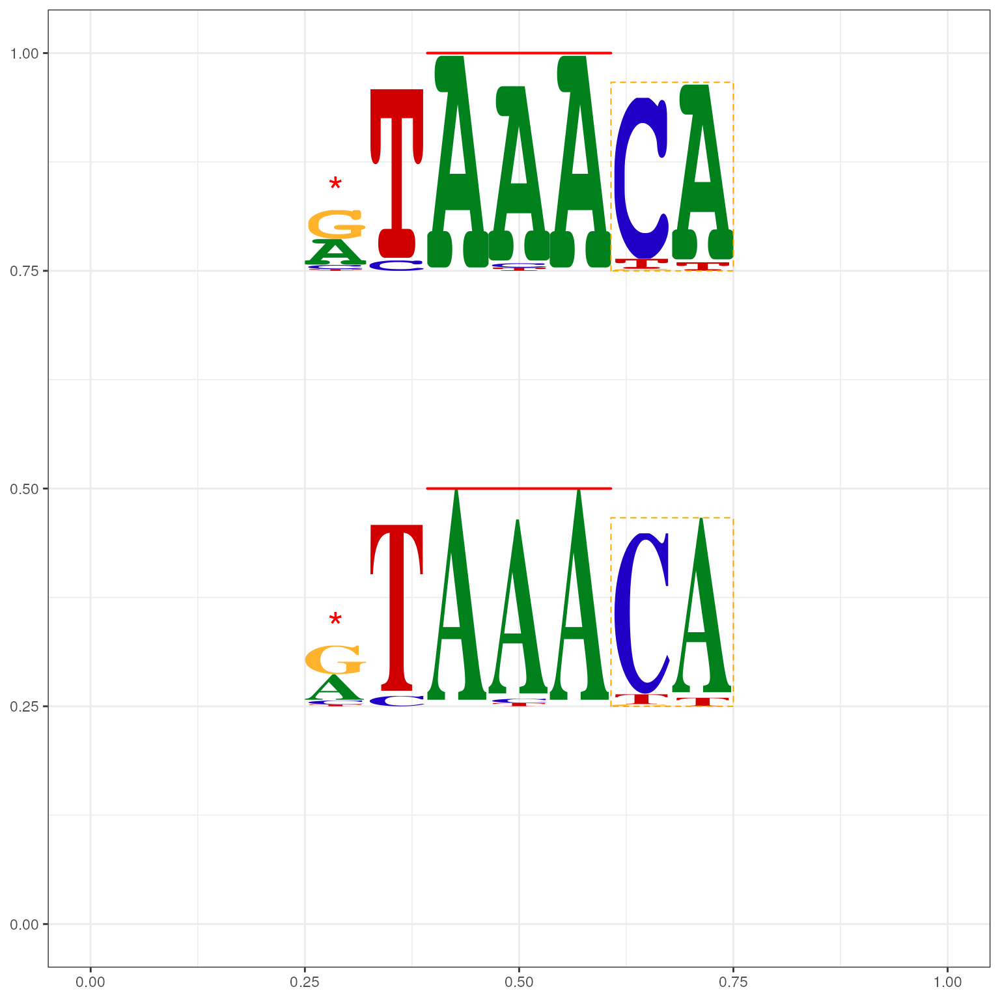

motifStack Vignette
Jianhong Ou, Michael Brodsky, Lihua Julie Zhu
11 November 2022
motifStack_HTML.RmdAbstract
The motifStack package is designed for graphic representation of multiple motifs with different similarity scores. It works with both DNA/RNA sequence motif, affinity logo and amino acid sequence motif. In addition, it provides the flexibility for users to customize the graphic parameters such as the font type and symbol colors.
Introduction
A sequence logo, based on information theory, has been widely used as a graphical representation of sequence conservation (aka motif) in multiple amino acid or nucleic acid sequences. Sequence motif represents conserved characteristics such as DNA binding sites, where transcription factors bind, and catalytic sites in enzymes. Although many tools, such as seqlogo1, have been developed to create sequence motif and to represent it as individual sequence logo, software tools for depicting the relationship among multiple sequence motifs are still lacking. We developed a flexible and powerful open-source R/Bioconductor package, motifStack, for visualization of the alignment of multiple sequence motifs.
Import matrix
The importMatrix function is used to import motifs from
files or convert XMatrix/XMatrixList object
into motifStack compatable format.
convert motifs from XMatrixList
library(motifStack)
library(JASPAR2020)
motifs <- importMatrix(getMatrixSet(JASPAR2020,
list(species="Mus musculus")))
plot(motifs[[1]])import data from PFMatrixList
import motifs from files
The supported formats are “meme”, “transfac”, “jaspar”, “scpd”, “cisbp”, and “psam”.
RUNX1 <- importMatrix(system.file("extdata", "MA0002.1.jaspar",
package = "motifStack",
mustWork = TRUE))[[1]]
plot(RUNX1)
import data from file
Examples of using motifStack
plot a DNA sequence logo with different fonts and colors
Users can select different fonts and colors to draw the sequence logo.
library(motifStack)
pcm <- read.table(file.path(find.package("motifStack"),
"extdata", "bin_SOLEXA.pcm"))
pcm <- pcm[,3:ncol(pcm)]
rownames(pcm) <- c("A","C","G","T")
motif <- new("pcm", mat=as.matrix(pcm), name="bin_SOLEXA")
##pfm object
#motif <- pcm2pfm(pcm)
#motif <- new("pfm", mat=motif, name="bin_SOLEXA")
plot(motif)
Plot a DNA sequence logo with different fonts and colors
#plot the logo with same height
plot(motif, ic.scale=FALSE, ylab="probability")
Plot a DNA sequence logo with different fonts and colors
#try a different font and a different color group
motif@color <- colorset(colorScheme='basepairing')
plot(motif,font="serif")
Plot a DNA sequence logo with different fonts and colors
plot sequence logo with markers
If you assign markers slot by a list of marker object,
markers can be plotted in the figure. There are three type of markers,
“rect”, “line” and “text”.
markerRect <- new("marker", type="rect", start=6, stop=7, gp=gpar(lty=2, fill=NA, col="orange"))
markerLine <- new("marker", type="line", start=2, stop=7, gp=gpar(lwd=2, col="red"))
markerText <- new("marker", type="text", start=c(1, 5),
label=c("*", "core"), gp=gpar(cex=2, col="red"))
motif <- new("pcm", mat=as.matrix(pcm), name="bin_SOLEXA",
markers=c(markerRect, markerLine, markerText))
plot(motif)Plot a DNA sequence logo with markers
plot a RNA sequence logo
To plot a RNA sequence logo, you only need to change the rowname of the matrix from “T” to “U” as follows.
rna <- pcm
rownames(rna)[4] <- "U"
motif <- new("pcm", mat=as.matrix(rna), name="RNA_motif")
plot(motif)Plot an RNA sequence logo
plot an amino acid sequence logo
Given that motifStack allows to use any letters as symbols, it can also be used to draw amino acid sequence logos.
library(motifStack)
protein<-read.table(file.path(find.package("motifStack"),"extdata","cap.txt"))
protein<-t(protein[,1:20])
motif<-pcm2pfm(protein)
motif<-new("pfm", mat=motif, name="CAP",
color=colorset(alphabet="AA",colorScheme="chemistry"))
plot(motif)Plot an sequence logo with any symbols as you want such as amino acid sequence logo
plot an affinity logo
It can also be used to draw affinity logos given a position specific affinity matrix (PSAM) as described by Foat et al.2.
library(motifStack)
motif<-matrix(
c(
.846, .631, .593, .000, .000, .000, .434, .410, 1.00, .655, .284, .000, .000, .771, .640, .961,
.625, .679, .773, 1.00, 1.00, .000, .573, .238, .397, 1.00, 1.00, .000, .298, 1.00, 1.00, .996,
1.00, 1.00, 1.00, .228, .000, 1.00, 1.00, .597, .622, .630, .000, 1.00, 1.00, .871, .617, 1.00,
.701, .513, .658, .000, .000, .247, .542, 1.00, .718, .686, .000, .000, .000, .595, .437, .970
), nrow=4, byrow = TRUE)
rownames(motif) <- c("A", "C", "G", "T")
motif<-new("psam", mat=motif, name="affinity logo",
markers=list(new("marker", type="rect",
start=c(4, 11), stop=c(6, 13),
gp=gpar(col="#009E73", fill=NA, lty=2))))
plot(motif)Plot an affinity logo
plot sequence logo stack
To show multiple motifs on the same canvas as a sequence logo stack,
the distance of motifs need to be calculated first. Previously,
MotIV3::motifDistances ( R
implementation of STAMP4) is
used to calculate the distance. However, The MotIV package were dropped
from Bioconductor 3_12. Currently, by default, R implementation of
matalign is used. After alignment, users can use
plotMotifLogoStack, plotMotifLogoStackWithTree
or plotMotifStackWithRadialPhylog to draw sequence logos in
different layouts. To make it easy to use, we integrated different
functionalities into one workflow function named as
motifStack.
library(motifStack)
#####Input#####
motifs<-importMatrix(dir(file.path(find.package("motifStack"),
"extdata"),"pcm$",
full.names = TRUE))
## plot stacks
motifStack(motifs, layout="stack", ncex=1.0)Plot motifs with sequence logo stack style
rnaMotifs <- DNAmotifToRNAmotif(motifs)
names(rnaMotifs)## [1] "bin_SOLEXA" "fd64A_SOLEXA" "fkh_NAR" "foxo_SOLEXA" "FoxP_SOLEXA"
## [6] "slp1_SOLEXA" "slp2_SOLEXA"
motifStack(rnaMotifs, layout = "stack",
reorder=FALSE) ## we can also use reorder=FALSE to keep the order of input. 
Plot RNA motifs with sequence logo stack style
motif2 <- motif
motif2$mat <- motif$mat[, 5:12]
motif2$name <- "logo2"
psamMotifs <- list(motif, motif2)
motifStack(psamMotifs)
Plot affinity logos with sequence logo stack style
## plot stacks with hierarchical tree
motifStack(motifs, layout="tree")Sequence logo stack with hierarchical cluster tree
## When the number of motifs is too much to be shown in a vertical stack,
## motifStack can draw them in a radial style.
## random sample from MotifDb
library("MotifDb")
matrix.fly <- query(MotifDb, "Dmelanogaster")
motifs2 <- as.list(matrix.fly)
## use data from FlyFactorSurvey
motifs2 <- motifs2[grepl("Dmelanogaster\\-FlyFactorSurvey\\-",
names(motifs2))]
## format the names
names(motifs2) <- gsub("Dmelanogaster_FlyFactorSurvey_", "",
gsub("_FBgn\\d+$", "",
gsub("[^a-zA-Z0-9]","_",
gsub("(_\\d+)+$", "", names(motifs2)))))
motifs2 <- motifs2[unique(names(motifs2))]
pfms <- sample(motifs2, 30)
## creat a list of object of pfm
motifs2 <- mapply(pfms, names(pfms), FUN=function(.ele, .name){
new("pfm",mat=.ele, name=.name)}, SIMPLIFY = FALSE)
## trim the motifs
motifs2 <- lapply(motifs2, trimMotif, t=0.4)
## setting colors
library(RColorBrewer)
color <- brewer.pal(10, "Set3")
## plot logo stack with radial style
motifStack(motifs2, layout="radialPhylog",
circle=0.3, cleaves = 0.2,
clabel.leaves = 0.5,
col.bg=rep(color, each=3), col.bg.alpha=0.3,
col.leaves=rep(color, each=3),
col.inner.label.circle=rep(color, each=3),
inner.label.circle.width=0.05,
col.outer.label.circle=rep(color, each=3),
outer.label.circle.width=0.02,
circle.motif=1.2,
angle=350)
Plot motifs in a radial style when the number of motifs is too much to be shown in a vertical stack
plot a sequence logo cloud
We can also plot a sequence logo cloud for DNA motifs.
## assign groups for motifs
groups <- rep(paste("group",1:5,sep=""), each=10)
names(groups) <- names(pfms)
## assign group colors
group.col <- brewer.pal(5, "Set3")
names(group.col)<-paste("group",1:5,sep="")
## create a list of pfm objects
pfms <- mapply(names(pfms), pfms, FUN=function(.ele, .pfm){
new("pfm",mat=.pfm, name=.ele)}
,SIMPLIFY = FALSE)
## use matalign to calculate the distances of motifs
hc <- clusterMotifs(pfms)
## convert the hclust to phylog object
library(ade4)
phylog <- ade4::hclust2phylog(hc)
## reorder the pfms by the order of hclust
leaves <- names(phylog$leaves)
pfms <- pfms[leaves]
## extract the motif signatures
motifSig <- motifSignature(pfms, phylog, cutoffPval=0.0001, min.freq=1)
## draw the motifs with a tag-cloud style.
motifCloud(motifSig, scale=c(6, .5),
layout="rectangles",
group.col=group.col,
groups=groups,
draw.legend=TRUE)
Sequence logo cloud with rectangle packing layout
plot grouped sequence logo
Grouped sequence logo can also be plotted in radial phylogeny tree style.
## get the signatures from object of motifSignature
sig <- signatures(motifSig)
## set the inner-circle color for each signature
gpCol <- sigColor(motifSig)
## plot the logo stack with radial style.
plotMotifStackWithRadialPhylog(phylog=phylog, pfms=sig,
circle=0.4, cleaves = 0.3,
clabel.leaves = 0.5,
col.bg=rep(color, each=3), col.bg.alpha=0.3,
col.leaves=rep(rev(color), each=3),
col.inner.label.circle=gpCol,
inner.label.circle.width=0.03,
angle=350, circle.motif=1.2,
motifScale="logarithmic")Grouped sequence logo with radialPhylog style layout
motifCircos
We can also plot it with circos style. In circos style, we can plot two group of motifs and with multiple color rings.
## plot the logo stack with cirsoc style.
motifCircos(phylog=phylog, pfms=pfms, pfms2=sig,
col.tree.bg=rep(color, each=5), col.tree.bg.alpha=0.3,
col.leaves=rep(rev(color), each=5),
col.inner.label.circle=gpCol,
inner.label.circle.width=0.03,
col.outer.label.circle=gpCol,
outer.label.circle.width=0.03,
r.rings=c(0.02, 0.03, 0.04),
col.rings=list(sample(colors(), 30),
sample(colors(), 30),
sample(colors(), 30)),
angle=350, motifScale="logarithmic")Grouped sequence logo with circos style layout
motifPiles
We can also plot the motifs in pile style. In pile style, we can plot two group of motifs with multiple types of annotation, for example heatmap. The col.anno parameter should be set as a named list.
## plot the logo stack with heatmap.
df <- data.frame(A=runif(n = 30), B=runif(n = 30), C=runif(n = 30), D=runif(n = 30))
map2col <- function(x, pal){
rg <- range(x)
pal[findInterval(x, seq(rg[1], rg[2], length.out = length(pal)+1),
all.inside = TRUE)]
}
dl <- lapply(df, map2col, pal=heat.colors(10))
## alignment of the pfms, this step will make the motif logos occupy
## more space. Users can skip this alignment to see the difference.
pfmsAligned <- DNAmotifAlignment(pfms)
## plot motifs
motifPiles(phylog=phylog, pfms=pfmsAligned,
col.tree=rep(color, each=5),
col.leaves=rep(rev(color), each=5),
col.pfms2=gpCol,
r.anno=rep(0.02, length(dl)),
col.anno=dl,
motifScale="logarithmic",
plotIndex=TRUE,
groupDistance=10)Grouped sequence logo with a heatmap
plot motifs with d3.js
Interactive plot can be generated using browseMotifs
function which leverages the d3.js library. All motifs
on the plot are draggable and the plot can be easily exported as a
Scalable Vector Graphics (SVG) file.
browseMotifs(pfms = pfms, phylog = phylog, layout="tree", yaxis = FALSE, baseWidth=6, baseHeight = 15)Plot the motifs in radialPhylog layout.
browseMotifs(pfms = pfms, phylog = phylog, layout="radialPhylog", yaxis = FALSE, xaxis = FALSE, baseWidth=6, baseHeight = 15)docker container for motifStack
Docker container allows software to be packaged into containers which can be run in any platform using a virtual machine called boot2docker. To ease the installation of motifStack and its depencies, we have created a docker image containing all the components needed to run motifStack. Users can download the motifStack docker image using the following code snippet.
cd ~ ## in windows, please try cd c:\\ Users\\ username
docker pull jianhong/motifstack:latest
mkdir tmp4motifstack ## this will be the share folder for your host and container.
docker run -ti --rm -v ${PWD}/tmp4motifstack:/volume/data jianhong/motifstack:latest bash
In motifstack:latest docker
1 cd /volume/data
2 git clone https://github.com/jianhong/motifStack.documentation.git
3 cd motifStack.documentation/
4 cp /usr/bin/matalign app/matalign-v4a
5 cp /usr/bin/phylip/neighbor app/neighbor.app/Contents/MacOS/neighbor
6 R cmd -e "rmarkdown::render('suppFigure2.Rmd')"
7 R cmd -e "rmarkdown::render('suppFigure6.Rmd')"
You will see the test.pdf file in the folder of tmp4motifstack.
plot motifs with ggplot2
motifs could be plotted by geom_motif function.
pcm <- read.table(file.path(find.package("motifStack"),
"extdata", "bin_SOLEXA.pcm"))
pcm <- pcm[,3:ncol(pcm)]
rownames(pcm) <- c("A","C","G","T")
markerRect <- new("marker", type="rect", start=6, stop=7, gp=gpar(lty=2, fill=NA, col="orange"))
markerLine <- new("marker", type="line", start=3, stop=5, gp=gpar(lwd=2, col="red"))
markerText <- new("marker", type="text", start=1, label="*", gp=gpar(cex=2, col="red"))
motif <- new("pcm", mat=as.matrix(pcm), name="bin_SOLEXA",
markers=c(markerRect, markerLine, markerText))
pfm <- pcm2pfm(motif)
df <- data.frame(xmin=c(.25, .25), ymin=c(.25, .75), xmax=c(.75, .75), ymax=c(.5, 1),
fontfamily=c("serif", "mono"), fontface=c(2, 1))
df$motif <- list(pfm, pfm)
library(ggplot2)
ggplot(df, aes(xmin=xmin, ymin=ymin, xmax=xmax, ymax=ymax, motif=motif,
fontfamily=fontfamily, fontface=fontface)) +
geom_motif() + theme_bw() + ylim(0, 1) + xlim(0, 1)
df <- data.frame(x=.5, y=c(.25, .75), width=.5, height=.25,
fontfamily=c("serif", "mono"), fontface=c(2, 1))
df$motif <- list(pfm, pfm)
ggplot(df, aes(x=x, y=y, width=width, height=height, motif=motif,
fontfamily=fontfamily, fontface=fontface)) +
geom_motif(use.xy=TRUE) + theme_bw() + ylim(0, 1) + xlim(0, 1)
Session Info
## R Under development (unstable) (2022-11-07 r83308)
## Platform: x86_64-pc-linux-gnu (64-bit)
## Running under: Ubuntu 22.04.1 LTS
##
## Matrix products: default
## BLAS: /usr/lib/x86_64-linux-gnu/openblas-pthread/libblas.so.3
## LAPACK: /usr/lib/x86_64-linux-gnu/openblas-pthread/libopenblasp-r0.3.20.so
##
## locale:
## [1] LC_CTYPE=en_US.UTF-8 LC_NUMERIC=C
## [3] LC_TIME=en_US.UTF-8 LC_COLLATE=en_US.UTF-8
## [5] LC_MONETARY=en_US.UTF-8 LC_MESSAGES=en_US.UTF-8
## [7] LC_PAPER=en_US.UTF-8 LC_NAME=C
## [9] LC_ADDRESS=C LC_TELEPHONE=C
## [11] LC_MEASUREMENT=en_US.UTF-8 LC_IDENTIFICATION=C
##
## time zone: Etc/UTC
## tzcode source: system (glibc)
##
## attached base packages:
## [1] stats4 grid stats graphics grDevices utils datasets
## [8] methods base
##
## other attached packages:
## [1] RColorBrewer_1.1-3 JASPAR2020_0.99.10 TFBSTools_1.37.0
## [4] ggplot2_3.4.0 ade4_1.7-20 MotifDb_1.41.0
## [7] Biostrings_2.67.0 XVector_0.39.0 GenomicRanges_1.51.1
## [10] GenomeInfoDb_1.35.2 IRanges_2.33.0 S4Vectors_0.37.0
## [13] BiocGenerics_0.45.0 motifStack_1.43.0 knitr_1.40
##
## loaded via a namespace (and not attached):
## [1] DBI_1.1.3 bitops_1.0-7
## [3] rlang_1.0.6 magrittr_2.0.3
## [5] matrixStats_0.62.0 compiler_4.3.0
## [7] RSQLite_2.2.18 png_0.1-7
## [9] systemfonts_1.0.4 vctrs_0.5.0
## [11] reshape2_1.4.4 stringr_1.4.1
## [13] pkgconfig_2.0.3 crayon_1.5.2
## [15] fastmap_1.1.0 ellipsis_0.3.2
## [17] labeling_0.4.2 splitstackshape_1.4.8
## [19] caTools_1.18.2 utf8_1.2.2
## [21] Rsamtools_2.15.0 rmarkdown_2.18
## [23] tzdb_0.3.0 pracma_2.4.2
## [25] ragg_1.2.4 DirichletMultinomial_1.41.0
## [27] purrr_0.3.5 bit_4.0.4
## [29] xfun_0.34 zlibbioc_1.45.0
## [31] cachem_1.0.6 CNEr_1.35.0
## [33] jsonlite_1.8.3 blob_1.2.3
## [35] highr_0.9 DelayedArray_0.25.0
## [37] BiocParallel_1.33.0 jpeg_0.1-9
## [39] parallel_4.3.0 R6_2.5.1
## [41] bslib_0.4.1 stringi_1.7.8
## [43] rtracklayer_1.59.0 jquerylib_0.1.4
## [45] Rcpp_1.0.9 SummarizedExperiment_1.29.1
## [47] base64enc_0.1-3 R.utils_2.12.1
## [49] readr_2.1.3 Matrix_1.5-1
## [51] yaml_2.3.6 codetools_0.2-18
## [53] lattice_0.20-45 tibble_3.1.8
## [55] plyr_1.8.7 withr_2.5.0
## [57] Biobase_2.59.0 KEGGREST_1.39.0
## [59] evaluate_0.18 desc_1.4.2
## [61] pillar_1.8.1 BiocManager_1.30.19
## [63] MatrixGenerics_1.11.0 grImport2_0.2-0
## [65] rprojroot_2.0.3 RCurl_1.98-1.9
## [67] hms_1.1.2 munsell_0.5.0
## [69] scales_1.2.1 BiocStyle_2.27.0
## [71] gtools_3.9.3 xtable_1.8-4
## [73] glue_1.6.2 seqLogo_1.65.0
## [75] tools_4.3.0 TFMPvalue_0.0.9
## [77] BiocIO_1.9.0 data.table_1.14.4
## [79] BSgenome_1.67.1 annotate_1.77.0
## [81] GenomicAlignments_1.35.0 fs_1.5.2
## [83] XML_3.99-0.12 poweRlaw_0.70.6
## [85] AnnotationDbi_1.61.0 colorspace_2.0-3
## [87] GenomeInfoDbData_1.2.9 restfulr_0.0.15
## [89] cli_3.4.1 textshaping_0.3.6
## [91] fansi_1.0.3 gtable_0.3.1
## [93] R.methodsS3_1.8.2 sass_0.4.2
## [95] digest_0.6.30 rjson_0.2.21
## [97] htmlwidgets_1.5.4 R.oo_1.25.0
## [99] memoise_2.0.1 htmltools_0.5.3
## [101] pkgdown_2.0.6 lifecycle_1.0.3
## [103] httr_1.4.4 GO.db_3.16.0
## [105] bit64_4.0.5 MASS_7.3-58.1